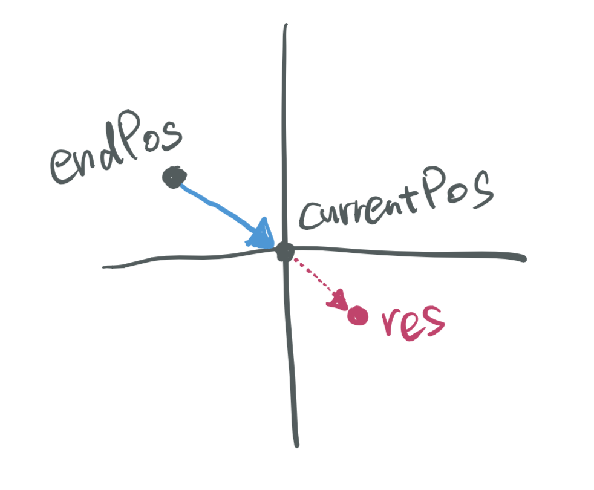
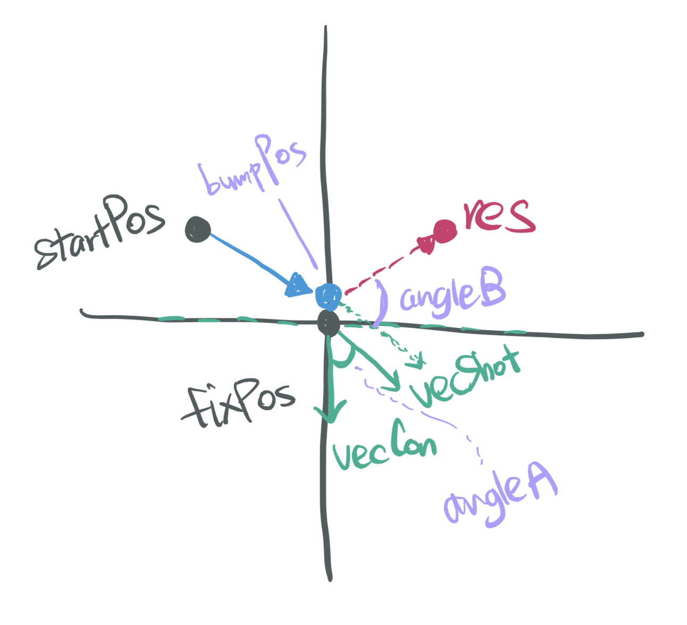

Candidate Number: 45625
This game is using the board and the stones of the traditional 'Go' game, however, exploiting a deceptively simple way of playing. By clicking a stone and dragging a line where a user wants, a stone will be bounced off according to the direction and the time. The objective of the game is to make all the opposite colour stones out of the board. There is no reference to make this game, it is made from scratch by borrowing the rule and the concept of the offline game.
This game provides two modes of play, AI Play Mode and Self Play Mode.
AI Play Mode: Playing with AI. Black stones are player's ones as the first turn.Self Play Mode: Playing both stones. All stones are controllable.The start page of the game briefly explains how users play it, and show the options of play modes after clicking 'Start' button.
Interestingly, JavaFX does not provide precise collision check functions. It can change direction within TimeLine,
nevertheless, a position needs to be calculated by own functions to apply an exact direction and a length.
In this program, TimeLine is used for showing a movement of stones, Mouse Event Handlers is
used for receiving user inputs and controlling game process, Stage and Pane to show and embed objects,
and other functions are created by myself.
It is really worthy to try this game needing a collision check and a trajectory calculation by JavaFX. This development makes it possible to experience all steps including self-computing to make objects move, applying logic, and designing game process.
The design is intentionally planned to be plain to evoke the atmosphere of a simple and old-school way of the game. The symbol of the game is romanesco broccoli representing the one of 'earth's most stunning natural fractal patterns' ("Earth's Most Stunning Natural Fractal Patterns, 09/10/10, Wired)
The board has the same grid as the Go's one, and each stone embeds romanesco broccoli. Stones with a shade can give a looking of solid figures. When stones are dragged, a line showing the trajectory is drawn. Originally, some sounds were inserted (a Chinese traditional music as background, a bump sound when stones collide, and a tension music when only one stone is left.) but they caused a serious delay of movements of stones. Consequently, the sound effect is deleted to remain stones smoothly moving although it can make the game lively.
The stones and the board is on different Panes, so they can be separately managed.
The stones are made by Circle to make collision checking efficient.
This program contains nine Java classes including test and one CSS:
Alggagi, MakeBoard, MoveController, AiController, CheckMove, CollisionCheck, Eject, Reflect, Test, and Style.css.
Please compile with
javac Alggagi.javaAlggagi: Generate start page and ask play mode options.MakeBoard: Make a board and set initial positions of stones and call each mode's class.MoveController: Make player movements. Based on mouse click, drag and release,
check time and direction, and calculate the expected trajectory.AiController: Toggle turns between player and AI. Make AI move by calculating each score of player stones for each AI stone
based on gaps between expected player stone position after shooting and the border lines.CheckMove: Check each move of stones and a game result and remove a stone if it is out.CollisionCheck: Check a collision among stones. If stones collide, make a new direction by calculating 'reflect' and 'eject'Eject: Calculate a bumped stone trajectory by using an end point of drawing line, a current position, and a time.Reflect: Calculate a reflection of a shooting stone by using a bumped stone position, a shooting stone position, and a collision point.Test: Unit testing for Eject and Reflect.The structure is Alggagi >
MakeBoard >
MoveController, AiController >
CheckMove, CollisionCheck, Eject, Reflect
There are several issues to make the structure of this program.
To solve the first and the second problems, the class of AiController and MoveController are separated,
and call MoveController inside AiController by employing the hierarchy of event handlers among
setOnMousePressed, setOnMouseReleased, addEventHandler
to go to MoveController and successfully get back to AiController.
By setting mouse event both in AiController and MoveController,
play turns can be effectively changed. Besides, theses two classes deploy the same check and calculation functions.
AiController.java
for (Shape stone : allStones) {
stone.setOnMousePressed(e -> makeMove.moveControl());
stone.setOnMouseReleased(e -> {
Task<Void> sleeper = new Task<>() {
@Override
protected Void call() {
try {
Thread.sleep(600);
} catch (InterruptedException e) {
System.out.println("Sleep failed");
}
return null;
}
};
sleeper.setOnSucceeded(e1 -> AiMoveControl());
new Thread(sleeper).start();
});
}
MoveController.java
thisOne.setOnMousePressed(e -> { ... });
thisOne.addEventHandler(MouseEvent.MOUSE_DRAGGED, e -> { ... });
thisOne.addEventHandler(MouseEvent.MOUSE_RELEASED, e -> { ... });
The third issue is tricky to resolve since (i) event handlers cannot be running the order of line by line
(ii) values should be frequently passed to other functions. To efficiently solve this problem and make the program robust,
call CheckMove function inside AiController and MoveController before each turn.
However, evert time it is called, copy each ArrayList by using the parametrised constructor to make it safe and
using getters in CheckMove to return lists.
public void AiMoveControl() {
CheckMove checkMove = new CheckMove(whiteStones, blackStones, stones, stage);
checkMove.checkOut();
whiteStones = new ArrayList<>(checkMove.returnWhite());
blackStones = new ArrayList<>(checkMove.returnBlack());
...
CheckMove(List<Shape> whiteStones, List<Shape> blackStones, Pane stones, Stage stage) {
this.whiteStones = new ArrayList<>(whiteStones);
this.blackStones = new ArrayList<>(blackStones);
this.stones = stones;
this.stage = stage;
}
List returnWhite() {
return whiteStones;
}
List returnBlack() {
return blackStones;
}
In all class, every parameter is dealt with the above way to make it robust.
There are two main calculations to make stones move. One is Eject and the other is Reflect.
Eject: The endPos is a final point of a dragged line,
the currentPos is a current position of a stone.public class Eject {
List eject (List<Double> endPos, List<Double> currentPos, double time) {
List<Double> newEndPos = new ArrayList<>(endPos);
List<Double> newCurrentPos = new ArrayList<>(currentPos);
List<Double> res = new ArrayList<>();
double difX = newCurrentPos.get(0) - newEndPos.get(0),
difY = newCurrentPos.get(1) - newEndPos.get(1);
double length = Math.sqrt(difX*difX + difY*difY);
res.add(newCurrentPos.get(0) + time * difX / length / 10);
res.add(newCurrentPos.get(1) + time * difY / length / 10);
return res;
}
}
This is the note used for generating calculation and reminding the parameters.
Reflect: The fixPos is a bumped stone position,
the startPos is a shooting stone position,
and the bumpPos is a collision point.public class Reflect {
final double pi = 3.1415926;
List reflect(List<Double> fixPos, List<Double> startPos, List<Double> bumpPos, double time) {
List<Double> newFixPos = new ArrayList<>(fixPos);
List<Double> newStartPos = new ArrayList<>(startPos);
List<Double> newBumpPos = new ArrayList<>(bumpPos);
List<Double> vecShot = new ArrayList<>();
List<Double> vecCon = new ArrayList<>();
List<Double> vecRes = new ArrayList<>();
vecShot.add(newBumpPos.get(0) - newStartPos.get(0));
vecShot.add(newBumpPos.get(1) - newStartPos.get(1));
vecCon.add(newFixPos.get(0) - newBumpPos.get(0));
vecCon.add(newFixPos.get(1) - newBumpPos.get(1));
boolean isClockwise = vecShot.get(0) * vecCon.get(1) - vecShot.get(1) * vecCon.get(0) > 0;
double angleA = (vecShot.get(0) * vecCon.get(0) + vecShot.get(1) * vecCon.get(1)) /
(Math.sqrt(vecShot.get(0) * vecShot.get(0) + vecShot.get(1) * vecShot.get(1))
*Math.sqrt(vecCon.get(0)* vecCon.get(0) + vecCon.get(1)* vecCon.get(1)));
double angleB = pi - 2 * Math.acos(angleA);
angleB = isClockwise == false ? pi * 2 - angleB : angleB;
vecRes.add(vecShot.get(0) * Math.cos(angleB) + vecShot.get(1) * Math.sin(angleB));
vecRes.add(vecShot.get(1) * Math.cos(angleB) - vecShot.get(0) * Math.sin(angleB));
double length = Math.sqrt(vecRes.get(0) * vecRes.get(0) + vecRes.get(1) * vecRes.get(1));
vecRes.set(0, newBumpPos.get(0) + time * vecRes.get(0) / length);
vecRes.set(1, newBumpPos.get(1) + time * vecRes.get(1) / length);
return vecRes;
}
}
This is the note used for generating calculation and reminding the parameters.
AI is made by employing the score system. Each AI stone has each opposite stone's score, and finally, maximum score will be chosen. The calculation is as follows:
for (Shape AiStone : whiteStones) {
List<Double> thisAiPos = new ArrayList<>();
thisAiPos.add(AiStone.getLayoutX());
thisAiPos.add(AiStone.getLayoutY());
for (Shape playerStone : blackStones) {
List<Double> thisPlayerPos = new ArrayList<>();
thisPlayerPos.add(playerStone.getLayoutX());
thisPlayerPos.add(playerStone.getLayoutY());
List<Double> expectVal = ejects.eject(thisAiPos, thisPlayerPos, maxSpeed);
List<Double> gap = new ArrayList<>();
gap.add(Math.abs(expectVal.get(0) - 0.0));
gap.add(Math.abs(expectVal.get(0) - border));
gap.add(Math.abs(expectVal.get(1) - 0.0));
gap.add(Math.abs(expectVal.get(1) - border));
if (expectVal.get(0) < 0 || expectVal.get(0) > border ||
expectVal.get(1) < 0 || expectVal.get(1) > border) {
expectScore.add(100.0 * Collections.min(gap));
}
else {
expectScore.add(10000.0 * 1/Collections.min(gap));
}
List<Shape> thisList = new ArrayList<>();
thisList.add(AiStone);
thisList.add(playerStone);
expectStoneLists.add(thisList);
}
}
if(expectStoneLists.size() > 0) {
int maxAt = expectScore.indexOf(Collections.max(expectScore));
AiSpeed = Collections.max(expectScore) / 5;
AiSpeed = AiSpeed > 2500.0 ? 2500.0 : AiSpeed;
...
AI mode sometimes shows a small bug, however, it is caused by detecting AI stone status, not by employing logic.